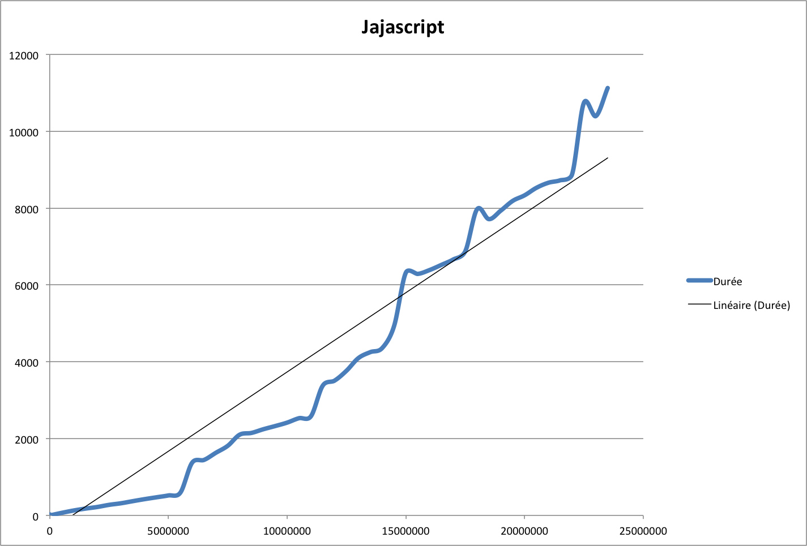

Journal de ma participation à CodeStory2013
Il n'y avait rien. Enfin pas complètement rien car il y avait ça :
Chaque développeur […] devra également installer un serveur web public […] l’équipe de CodeStory va poser une question au serveur […] au travers d’une requête http GET. […] La réponse doit être fournie dans le body de la réponse de la requête http.
La première question est simple. […]
http://(serveur)/?q=Quelle+est+ton+adresse+emailde votre serveur doit répondre par un document ne contenant que votre adresse email.
N'ayant pas a priori trop de temps à consacrer à Code Story j'ai préféré rester dans le classique : Java 7 & Tomcat. Pour l'hébergement, j'avais ouvert un compte sur Cloudbees depuis la présentation de Nicolas De Loof au BordeauxJUG que j'allais pouvoir mettre à contribution.
L'implémentation des premières questions se fait rapidement en jetant un coup d'œil sur les logs et en ajoutant le couple question/réponse avant de redéployer. Lorsqu'arrive "Es tu pret a recevoir une enonce au format markdown par http post(OUI/NON)" je pars sur une implémentation minimale ("use the logs Luke" me souffle une petite voix dans ma tête).
Cette première partie ne posa pas de problème & ne fut pas chronophage : jusque là tout va bien …
J'ai commencé pour un rapide refactoring pour introduire l'interface Resolver. Ensuite un rapide brainstorming avec moi même pour choisir Jackson pour le formatage du JSon. L'algorithme final est récursif et utilise une enum pour stocker les différentes pièces :
protected List<Map<COIN, Integer>> computeChange(COIN currentCoin, int value) {
if (currentCoin.getValue() == 1) {
Map<COIN, Integer> changeMap = Maps.newHashMapWithExpectedSize(COIN.values().length);
addToChange(currentCoin, value, changeMap);
return Lists.newArrayList(changeMap);
}
int maxCoins = value / currentCoin.getValue();
List<Map<COIN, Integer>> results = Lists.newArrayList();
for (int i = 0; i <= maxCoins; i++) {
List<Map<COIN, Integer>> subChanges = computeChange(COIN.values()[currentCoin.ordinal() - 1], value - i * currentCoin.getValue());
for (Map<COIN, Integer> change : subChanges) {
addToChange(currentCoin, i, change);
results.add(change);
}
}
return results;
}
Déploiement, petits coup d'œil aux logs pour surveiller le passage du robot … yes ! il est passé & visiblement mes résultats sont corrects. Et puis arrive ça : 1 1 …
Solitude, interrogation avant de me rendre compte qu'il fallait regarder la question avant décodage du paramètre. J'ai fait deux implémentation de la calculatrice : une première en utilisant exp4j plutôt que Groovy qui ressemblait à un marteau-pillon pour casser une noix. Ça a marché pas trop mal jusqu'à ça :
((1,1+2)+3,14+4+(5+6+7)+(8+9+10)*4267387833344334647677634)/2*553344300034334349999000
Exp4j faisant les calculs avec des doubles j'ai perdu du monde au passage et le robot n'a pas aimé. La solution est bien sûr de passer par BigDecimal mais exp4j n'est malheureusement pas conçu autour d'un pattern visitor donc très très difficile de changer la manière dont sont fait les calculs.
Finalement le marteau-pillon a du bon et Groovy ce sera.
Pour le deuxième énoncé je commence par une implémentation récursive et assez simple :
Plan computePlan(Flight[] flights) {
Plan plan = null;
for (int i = 0; i < flights.length; i++) {
Flight current = flights[i];
List<Flight> selectedFlights = new ArrayList<>(flights.length - i);
for (int j = i + 1; j < flights.length; j++) {
Flight candidate = flights[j];
if (current.isCompatibleWith(candidate)) {
selectedFlights.add(candidate);
}
}
Plan currentPlan;
int gain;
if (selectedFlights.isEmpty()) {
gain = current.getPrix();
currentPlan = new Plan(gain, Arrays.asList(current));
} else {
Flight[] subArray = selectedFlights.toArray(new Flight[selectedFlights.size()]);
currentPlan = computePlan(subArray);
gain = current.getPrix() + currentPlan.getGain();
List<Flight> path = new ArrayList<>(currentPlan.getPath().size() + 1);
path.add(current);
path.addAll(currentPlan.getPath());
currentPlan = new Plan(gain, path);
}
if (plan == null || plan.getGain() < gain) {
plan = currentPlan;
}
}
return plan;
}
Les quelques tests donnent des résultats assez satisfaisant en terme de temps de réponse. Le robot étant en RTT le week-end où j'ai codé mon algorithme je me suis lancé confiant dans le codage d'un petit test de performance qui va faire des tests avec un nombre variable de vols. Et là … catastrophe, les temps de réponses deviennent catastrophiques lorsque je dépasse 100 vols. J'essaye des améliorations comme trier la liste des vols avant de commencer le traitement mais ça ne change rien. Il va falloir un changement radical d'algorithme.
J'ai passé pas mal de temps à réfléchir à un algo en regardant du côté des graphes, des arbres avec élagage par alpha/beta sans que cela me convainque. Au final j'ai eu une illumination et je suis sorti avec un algo sur mesure pour le problème :
Au final les temps de réponse sont pas mal du tout et la complexité est très proche de o(n).

int maxGain = -1;
Slot selectedSlot = null;
for (int i = slots.length - 2; i >= 0; i--) {
Slot currentSlot = slots[i];
Slot selectedNextSlot = slots[i + 1];
int gain = selectedNextSlot.getGain();
Flight selectedFlight = null;
for (Flight flight : currentSlot.getFlights()) {
Slot nextSlot = slots[flight.getEnd()];
int currentGain = flight.getPrix() + nextSlot.getGain();
if (currentGain > gain) {
selectedFlight = flight;
gain = currentGain;
selectedNextSlot = nextSlot;
}
}
currentSlot.setGain(gain);
if (selectedFlight != null) currentSlot.getPath().add(selectedFlight);
currentSlot.getPath().addAll(selectedNextSlot.getPath());
if (currentSlot.getGain() > maxGain) {
maxGain = currentSlot.getGain();
selectedSlot = currentSlot;
}
}
assert selectedSlot != null;
return new Plan(maxGain, selectedSlot.getPath());
Pour la petite histoire j'ai eu l'idée de l'algorithme un dimanche avant de me coucher. Je me suis dit : c'est bon il est déjà 1h je vais dormir maintenant et je coderai ça demain. Ça a été une grossière erreur puisque j'ai très mal dormi.
Lorsque le robot est revenu de week-end, tout s'est très bien passé jusqu'à 10000 ou 50000 vols car sur mon instance gratuite Cloudbees le calcul se terminait par une magnifique OutOfMemoryException. J'ai augmenté la taille de mon instance jusqu'à 512Mb mais j'avais toujours le même problème. J'ai donc dû faire des optimisations drastiques en évitant à tout prix les recopies de tableaux dans les ArrayList.
La version finale a réussi à passer l'intégralité des tests sur une instance gratuite.